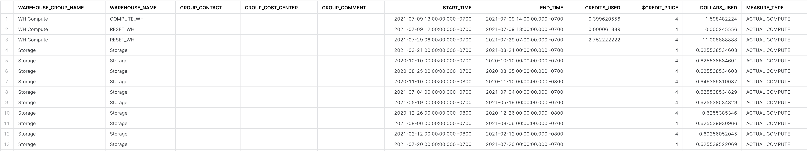

이 리소스 최적화 가이드는 해당 시리즈에 포함되어 있는 4개의 모듈 중 하나를 나타냅니다. 이러한 가이드는 고객이 자신의 크레딧 소비를 더 잘 모니터링하고 관리할 수 있도록 돕는 것을 목적으로 합니다. 고객이 자신의 크레딧이 효율적으로 사용되고 있다는 것을 자신할 수 있도록 돕는 것은 지속적이며 성공적인 파트너십에 중요합니다. 이 리소스 최적화를 위한 Snowflake 빠른 시작 세트와 더불어 Snowflake는 커뮤니티 지원, 교육 및 프로페셔널 서비스를 제공합니다. 유료 서비스에 대한 자세한 내용은 다가오는 훈련 및 교육에서 확인하십시오.
이 블로그 포스트는 여러분이 Snowflake의 리소스 최적화 기능을 더 잘 이해할 수 있도록 합니다.
청구 메트릭
청구 쿼리는 웨어하우스 컴퓨팅, Snowpipe 컴퓨팅 및 저장소 비용을 포함하는 Snowflake 클라우드 데이터 플랫폼의 높은 수준 함수와 관련되어 있는 총비용을 확인하는 것을 책임집니다. 하나의 카테고리에서 다른 카테고리와 비교했을 때 비용이 월등히 높다면 원인이 무엇인지 평가하고 싶을 수 있습니다.
이러한 메트릭은 또한 가장 많은 크레딧을 소비하는 쿼리를 확인하고자 합니다. 거기서부터 중요성(실행되어야 한다면 이렇게 자주 실행되어야 하는지)을 위해 이러한 각 쿼리를 분석할 수 있으며 과도한 소비(예: 리소스 모니터, 문 시간제한 등)를 방지하기 위해 추가 제어를 적용해야 하는지 탐색할 수 있습니다.
학습할 내용
- 모든 서비스에 걸쳐 Snowflake 소비 확인 및 분석 방법
- 가장 리소스 집약적인 쿼리 분석 방법
- 서버리스 소비 분석 방법
필요한 것
- Snowflake 계정
- 계정 사용량 데이터 공유를 보기 위한 액세스
관련 자료
- 리소스 최적화: 설정 및 구성
- 리소스 최적화: 사용량 모니터링
- 리소스 최적화: 성능
리소스 최적화 Snowflake 빠른 시작 내에 있는 각 쿼리 이름의 오른쪽에는 ‘(T*)'로 계층 지정이 있습니다. 다음 계층 설명은 이러한 지정을 더 잘 이해하는 데 도움이 됩니다.
계층 1 쿼리
본질적으로 계층 1 쿼리는 Snowflake의 리소스 최적화에 매우 중요합니다. 또한 각 고객이 규모, 업계, 위치 등에 관계없이 자신의 소비 모니터링에 대해 도움을 받기 위해 사용해야 합니다.
계층 2 쿼리
계층 2 쿼리는 리소스 최적화에 대한 추가적인 깊이를 제공하는 동시에 프로세스에서 중요한 역할을 수행합니다. 또한 모든 고객과 고객의 워크로드에 필수적이지는 않을지라도 과도한 소비가 확인되었을 수 있는 모든 추가 영역에 대한 추가적인 설명을 제공할 수 있습니다.
계층 3 쿼리
마지막으로 계층 3 쿼리는 Snowflake 소비를 최적화하는 데 있어서 모든 부분을 확인하고자 하는 고객이 사용할 수 있도록 설계되었습니다. 이러한 쿼리는 이 프로세스에서 여전히 매우 유용하지만 계층 1 및 2의 쿼리만큼 중요하지는 않습니다.
계층 1
설명:
웨어하우스의 총 컴퓨팅 비용, 서버리스 기능 및 총 저장소 비용과 관계가 있기에 주요 메트릭을 식별합니다.
결과 해석 방법:
어디에서 가장 많은 비용이 발생하나요(컴퓨팅, 서버리스, 저장소)? 이러한 카테고리에서 기대치를 넘어서는 과도한 비용이 확인되나요?
주요 스키마:
Account_Usage
SQL
/* These queries can be used to measure where costs have been incurred by
the different cost vectors within a Snowflake account including:
1) Warehouse Costs
2) Serverless Costs
3) Storage Costs
To accurately report the dollar amounts, make changes to the variables
defined on lines 17 to 20 to properly reflect your credit price, the initial
capacity purchased, when your contract started and the term (default 12 months)
If unsure, ask your Sales Engineer or Account Executive
*/
USE DATABASE SNOWFLAKE;
USE SCHEMA ACCOUNT_USAGE;
SET CREDIT_PRICE = 4.00; --edit this number to reflect credit price
SET TERM_LENGTH = 12; --integer value in months
SET TERM_START_DATE = '2019-01-01';
SET TERM_AMOUNT = 100000.00; --number(10,2) value in dollars
WITH CONTRACT_VALUES AS (
SELECT
$CREDIT_PRICE::decimal(10,2) as CREDIT_PRICE
,$TERM_AMOUNT::decimal(38,0) as TOTAL_CONTRACT_VALUE
,$TERM_START_DATE::timestamp as CONTRACT_START_DATE
,DATEADD(month,$TERM_LENGTH,$TERM_START_DATE)::timestamp as CONTRACT_END_DATE
),
PROJECTED_USAGE AS (
SELECT
CREDIT_PRICE
,TOTAL_CONTRACT_VALUE
,CONTRACT_START_DATE
,CONTRACT_END_DATE
,(TOTAL_CONTRACT_VALUE)
/
DATEDIFF(day,CONTRACT_START_DATE,CONTRACT_END_DATE) AS DOLLARS_PER_DAY
, (TOTAL_CONTRACT_VALUE/CREDIT_PRICE)
/
DATEDIFF(day,CONTRACT_START_DATE,CONTRACT_END_DATE) AS CREDITS_PER_DAY
FROM CONTRACT_VALUES
)
--COMPUTE FROM WAREHOUSES
SELECT
'WH Compute' as WAREHOUSE_GROUP_NAME
,WMH.WAREHOUSE_NAME
,NULL AS GROUP_CONTACT
,NULL AS GROUP_COST_CENTER
,NULL AS GROUP_COMMENT
,WMH.START_TIME
,WMH.END_TIME
,WMH.CREDITS_USED
,$CREDIT_PRICE
,($CREDIT_PRICE*WMH.CREDITS_USED) AS DOLLARS_USED
,'ACTUAL COMPUTE' AS MEASURE_TYPE
from SNOWFLAKE.ACCOUNT_USAGE.WAREHOUSE_METERING_HISTORY WMH
UNION ALL
--COMPUTE FROM SNOWPIPE
SELECT
'Snowpipe' AS WAREHOUSE_GROUP_NAME
,PUH.PIPE_NAME AS WAREHOUSE_NAME
,NULL AS GROUP_CONTACT
,NULL AS GROUP_COST_CENTER
,NULL AS GROUP_COMMENT
,PUH.START_TIME
,PUH.END_TIME
,PUH.CREDITS_USED
,$CREDIT_PRICE
,($CREDIT_PRICE*PUH.CREDITS_USED) AS DOLLARS_USED
,'ACTUAL COMPUTE' AS MEASURE_TYPE
from SNOWFLAKE.ACCOUNT_USAGE.PIPE_USAGE_HISTORY PUH
UNION ALL
--COMPUTE FROM CLUSTERING
SELECT
'Auto Clustering' AS WAREHOUSE_GROUP_NAME
,DATABASE_NAME || '.' || SCHEMA_NAME || '.' || TABLE_NAME AS WAREHOUSE_NAME
,NULL AS GROUP_CONTACT
,NULL AS GROUP_COST_CENTER
,NULL AS GROUP_COMMENT
,ACH.START_TIME
,ACH.END_TIME
,ACH.CREDITS_USED
,$CREDIT_PRICE
,($CREDIT_PRICE*ACH.CREDITS_USED) AS DOLLARS_USED
,'ACTUAL COMPUTE' AS MEASURE_TYPE
from SNOWFLAKE.ACCOUNT_USAGE.AUTOMATIC_CLUSTERING_HISTORY ACH
UNION ALL
--COMPUTE FROM MATERIALIZED VIEWS
SELECT
'Materialized Views' AS WAREHOUSE_GROUP_NAME
,DATABASE_NAME || '.' || SCHEMA_NAME || '.' || TABLE_NAME AS WAREHOUSE_NAME
,NULL AS GROUP_CONTACT
,NULL AS GROUP_COST_CENTER
,NULL AS GROUP_COMMENT
,MVH.START_TIME
,MVH.END_TIME
,MVH.CREDITS_USED
,$CREDIT_PRICE
,($CREDIT_PRICE*MVH.CREDITS_USED) AS DOLLARS_USED
,'ACTUAL COMPUTE' AS MEASURE_TYPE
from SNOWFLAKE.ACCOUNT_USAGE.MATERIALIZED_VIEW_REFRESH_HISTORY MVH
UNION ALL
--COMPUTE FROM SEARCH OPTIMIZATION
SELECT
'Search Optimization' AS WAREHOUSE_GROUP_NAME
,DATABASE_NAME || '.' || SCHEMA_NAME || '.' || TABLE_NAME AS WAREHOUSE_NAME
,NULL AS GROUP_CONTACT
,NULL AS GROUP_COST_CENTER
,NULL AS GROUP_COMMENT
,SOH.START_TIME
,SOH.END_TIME
,SOH.CREDITS_USED
,$CREDIT_PRICE
,($CREDIT_PRICE*SOH.CREDITS_USED) AS DOLLARS_USED
,'ACTUAL COMPUTE' AS MEASURE_TYPE
from SNOWFLAKE.ACCOUNT_USAGE.SEARCH_OPTIMIZATION_HISTORY SOH
UNION ALL
--COMPUTE FROM REPLICATION
SELECT
'Replication' AS WAREHOUSE_GROUP_NAME
,DATABASE_NAME AS WAREHOUSE_NAME
,NULL AS GROUP_CONTACT
,NULL AS GROUP_COST_CENTER
,NULL AS GROUP_COMMENT
,RUH.START_TIME
,RUH.END_TIME
,RUH.CREDITS_USED
,$CREDIT_PRICE
,($CREDIT_PRICE*RUH.CREDITS_USED) AS DOLLARS_USED
,'ACTUAL COMPUTE' AS MEASURE_TYPE
from SNOWFLAKE.ACCOUNT_USAGE.REPLICATION_USAGE_HISTORY RUH
UNION ALL
--STORAGE COSTS
SELECT
'Storage' AS WAREHOUSE_GROUP_NAME
,'Storage' AS WAREHOUSE_NAME
,NULL AS GROUP_CONTACT
,NULL AS GROUP_COST_CENTER
,NULL AS GROUP_COMMENT
,SU.USAGE_DATE
,SU.USAGE_DATE
,NULL AS CREDITS_USED
,$CREDIT_PRICE
,((STORAGE_BYTES + STAGE_BYTES + FAILSAFE_BYTES)/(1024*1024*1024*1024)*23)/DA.DAYS_IN_MONTH AS DOLLARS_USED
,'ACTUAL COMPUTE' AS MEASURE_TYPE
from SNOWFLAKE.ACCOUNT_USAGE.STORAGE_USAGE SU
JOIN (SELECT COUNT(*) AS DAYS_IN_MONTH,TO_DATE(DATE_PART('year',D_DATE)||'-'||DATE_PART('month',D_DATE)||'-01') as DATE_MONTH FROM SNOWFLAKE_SAMPLE_DATA.TPCDS_SF10TCL.DATE_DIM GROUP BY TO_DATE(DATE_PART('year',D_DATE)||'-'||DATE_PART('month',D_DATE)||'-01')) DA ON DA.DATE_MONTH = TO_DATE(DATE_PART('year',USAGE_DATE)||'-'||DATE_PART('month',USAGE_DATE)||'-01')
UNION ALL
SELECT
NULL as WAREHOUSE_GROUP_NAME
,NULL as WAREHOUSE_NAME
,NULL as GROUP_CONTACT
,NULL as GROUP_COST_CENTER
,NULL as GROUP_COMMENT
,DA.D_DATE::timestamp as START_TIME
,DA.D_DATE::timestamp as END_TIME
,PU.CREDITS_PER_DAY AS CREDITS_USED
,PU.CREDIT_PRICE
,PU.DOLLARS_PER_DAY AS DOLLARS_USED
,'PROJECTED COMPUTE' AS MEASURE_TYPE
FROM PROJECTED_USAGE PU
JOIN SNOWFLAKE_SAMPLE_DATA.TPCDS_SF10TCL.DATE_DIM DA ON DA.D_DATE BETWEEN PU.CONTRACT_START_DATE AND PU.CONTRACT_END_DATE
UNION ALL
SELECT
NULL as WAREHOUSE_GROUP_NAME
,NULL as WAREHOUSE_NAME
,NULL as GROUP_CONTACT
,NULL as GROUP_COST_CENTER
,NULL as GROUP_COMMENT
,NULL as START_TIME
,NULL as END_TIME
,NULL AS CREDITS_USED
,PU.CREDIT_PRICE
,PU.TOTAL_CONTRACT_VALUE AS DOLLARS_USED
,'CONTRACT VALUES' AS MEASURE_TYPE
FROM PROJECTED_USAGE PU
;
스크린샷

계층 2
설명:
이 쿼리는 지난 30일간 가장 비싼 쿼리를 불러옵니다. 이는 웨어하우스 크기를 고려합니다. 따라서 더 큰 웨어하우스에서 1분 동안 쿼리하는 것이 더 작은 웨어하우스에서 1분 동안 쿼리하는 것보다 더 비싸다고 가정합니다.
결과 해석 방법:
이는 비싼 쿼리를 평가하고 조치를 취할 기회입니다. 관리자는 다음을 할 수 있습니다.
-쿼리 프로필 확인
-쿼리를 실행했던 사용자에게 연락
-이러한 쿼리의 최적화를 위한 조치 이행
주요 스키마:
Account_Usage
SQL
WITH WAREHOUSE_SIZE AS
(
SELECT WAREHOUSE_SIZE, NODES
FROM (
SELECT 'XSMALL' AS WAREHOUSE_SIZE, 1 AS NODES
UNION ALL
SELECT 'SMALL' AS WAREHOUSE_SIZE, 2 AS NODES
UNION ALL
SELECT 'MEDIUM' AS WAREHOUSE_SIZE, 4 AS NODES
UNION ALL
SELECT 'LARGE' AS WAREHOUSE_SIZE, 8 AS NODES
UNION ALL
SELECT 'XLARGE' AS WAREHOUSE_SIZE, 16 AS NODES
UNION ALL
SELECT '2XLARGE' AS WAREHOUSE_SIZE, 32 AS NODES
UNION ALL
SELECT '3XLARGE' AS WAREHOUSE_SIZE, 64 AS NODES
UNION ALL
SELECT '4XLARGE' AS WAREHOUSE_SIZE, 128 AS NODES
)
),
QUERY_HISTORY AS
(
SELECT QH.QUERY_ID
,QH.QUERY_TEXT
,QH.USER_NAME
,QH.ROLE_NAME
,QH.EXECUTION_TIME
,QH.WAREHOUSE_SIZE
FROM SNOWFLAKE.ACCOUNT_USAGE.QUERY_HISTORY QH
WHERE START_TIME > DATEADD(month,-2,CURRENT_TIMESTAMP())
)
SELECT QH.QUERY_ID
,'https://' || current_account() || '.snowflakecomputing.com/console#/monitoring/queries/detail?queryId='||QH.QUERY_ID AS QU
,QH.QUERY_TEXT
,QH.USER_NAME
,QH.ROLE_NAME
,QH.EXECUTION_TIME as EXECUTION_TIME_MILLISECONDS
,(QH.EXECUTION_TIME/(1000)) as EXECUTION_TIME_SECONDS
,(QH.EXECUTION_TIME/(1000*60)) AS EXECUTION_TIME_MINUTES
,(QH.EXECUTION_TIME/(1000*60*60)) AS EXECUTION_TIME_HOURS
,WS.WAREHOUSE_SIZE
,WS.NODES
,(QH.EXECUTION_TIME/(1000*60*60))*WS.NODES as RELATIVE_PERFORMANCE_COST
FROM QUERY_HISTORY QH
JOIN WAREHOUSE_SIZE WS ON WS.WAREHOUSE_SIZE = upper(QH.WAREHOUSE_SIZE)
ORDER BY RELATIVE_PERFORMANCE_COST DESC
LIMIT 200
;
계층 2
설명:
이는 지난 한 달 동안의 웨어하우스당 쿼리 활동과 크레딧 소비를 요약합니다. 쿼리에는 또한 실행된 쿼리와 웨어하우스에서 소비된 크레딧의 비율이 포함되어 있습니다
결과 해석 방법:
웨어하우스 소비가 실행된 쿼리 수에 비해 크게 벗어나는 모든 시나리오를 중점적으로 다룹니다. 자동 일시 중단이 조정되거나 웨어하우스가 통합되어야 할 수 있습니다.
주요 스키마:
Account_Usage
SQL
set credit_price = 4; --edit this value to reflect your credit price
SELECT
COALESCE(WC.WAREHOUSE_NAME,QC.WAREHOUSE_NAME) AS WAREHOUSE_NAME
,QC.QUERY_COUNT_LAST_MONTH
,WC.CREDITS_USED_LAST_MONTH
,WC.CREDIT_COST_LAST_MONTH
,CAST((WC.CREDIT_COST_LAST_MONTH / QC.QUERY_COUNT_LAST_MONTH) AS decimal(10,2) ) AS COST_PER_QUERY
FROM (
SELECT
WAREHOUSE_NAME
,COUNT(QUERY_ID) as QUERY_COUNT_LAST_MONTH
FROM SNOWFLAKE.ACCOUNT_USAGE.QUERY_HISTORY
WHERE TO_DATE(START_TIME) >= TO_DATE(DATEADD(month,-1,CURRENT_TIMESTAMP()))
GROUP BY WAREHOUSE_NAME
) QC
JOIN (
SELECT
WAREHOUSE_NAME
,SUM(CREDITS_USED) as CREDITS_USED_LAST_MONTH
,SUM(CREDITS_USED)*($CREDIT_PRICE) as CREDIT_COST_LAST_MONTH
FROM SNOWFLAKE.ACCOUNT_USAGE.WAREHOUSE_METERING_HISTORY
WHERE TO_DATE(START_TIME) >= TO_DATE(DATEADD(month,-1,CURRENT_TIMESTAMP()))
GROUP BY WAREHOUSE_NAME
) WC
ON WC.WAREHOUSE_NAME = QC.WAREHOUSE_NAME
ORDER BY COST_PER_QUERY DESC
;
스크린샷

계층 3
설명:
지난 30일간 자동 클러스터링과 서비스를 통해 소비된 크레딧 볼륨을 포함하며 날짜별로 분석된 테이블의 전체 목록입니다.
결과 해석 방법:
크레딧 소비의 불규칙성 또는 지속적으로 높은 소비를 찾습니다
주요 스키마:
Account_Usage
SQL
SELECT TO_DATE(START_TIME) as DATE
,DATABASE_NAME
,SCHEMA_NAME
,TABLE_NAME
,SUM(CREDITS_USED) as CREDITS_USED
FROM "SNOWFLAKE"."ACCOUNT_USAGE"."AUTOMATIC_CLUSTERING_HISTORY"
WHERE START_TIME >= dateadd(month,-1,current_timestamp())
GROUP BY 1,2,3,4
ORDER BY 5 DESC
;
스크린샷

계층 3
설명:
지난 30일간 구체화된 뷰와 서비스를 통해 소비된 크레딧 볼륨을 포함하며 날짜별로 분석된 테이블의 전체 목록입니다.
결과 해석 방법:
크레딧 소비의 불규칙성 또는 지속적으로 높은 소비를 찾습니다
주요 스키마:
Account_Usage
SQL
SELECT
TO_DATE(START_TIME) as DATE
,DATABASE_NAME
,SCHEMA_NAME
,TABLE_NAME
,SUM(CREDITS_USED) as CREDITS_USED
FROM "SNOWFLAKE"."ACCOUNT_USAGE"."MATERIALIZED_VIEW_REFRESH_HISTORY"
WHERE START_TIME >= dateadd(month,-1,current_timestamp())
GROUP BY 1,2,3,4
ORDER BY 5 DESC
;
계층 3
설명:
지난 30일간 검색 최적화와 서비스를 통해 소비된 크레딧 볼륨을 포함하며 날짜별로 분석된 테이블의 전체 목록입니다.
결과 해석 방법:
크레딧 소비의 불규칙성 또는 지속적으로 높은 소비를 찾습니다
주요 스키마:
Account_Usage
SQL
SELECT
TO_DATE(START_TIME) as DATE
,DATABASE_NAME
,SCHEMA_NAME
,TABLE_NAME
,SUM(CREDITS_USED) as CREDITS_USED
FROM "SNOWFLAKE"."ACCOUNT_USAGE"."SEARCH_OPTIMIZATION_HISTORY"
WHERE START_TIME >= dateadd(month,-1,current_timestamp())
GROUP BY 1,2,3,4
ORDER BY 5 DESC
;
계층 3
설명:
지난 30일간 날짜별로 분석된 파이프와 서비스를 통해 소비된 크레딧 볼륨의 전체 목록입니다.
결과 해석 방법:
크레딧 소비의 불규칙성 또는 지속적으로 높은 소비를 찾습니다
주요 스키마:
Account_Usage
SQL
SELECT
TO_DATE(START_TIME) as DATE
,PIPE_NAME
,SUM(CREDITS_USED) as CREDITS_USED
FROM "SNOWFLAKE"."ACCOUNT_USAGE"."PIPE_USAGE_HISTORY"
WHERE START_TIME >= dateadd(month,-1,current_timestamp())
GROUP BY 1,2
ORDER BY 3 DESC
;
계층 3
설명:
지난 30일간 날짜별로 분석된 복제된 데이터베이스와 서비스를 통해 소비된 크레딧 볼륨의 전체 목록입니다.
결과 해석 방법:
크레딧 소비의 불규칙성 또는 지속적으로 높은 소비를 찾습니다
주요 스키마:
Account_Usage
SQL
SELECT
TO_DATE(START_TIME) as DATE
,DATABASE_NAME
,SUM(CREDITS_USED) as CREDITS_USED
FROM "SNOWFLAKE"."ACCOUNT_USAGE"."REPLICATION_USAGE_HISTORY"
WHERE START_TIME >= dateadd(month,-1,current_timestamp())
GROUP BY 1,2
ORDER BY 3 DESC
;